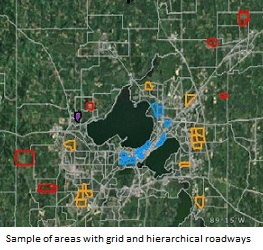

Madison is at a three-way crossroad, only it isn't sure which fork leads to the future, which maintains the status quo,
and which goes backward.
For example, when this was being written, we could read side-by-side two articles in what has become the web version
of what used to be a daily newspaper: "Plain Talk: Time to stop throwing money at highways," in which the author decries plans for a billion dollar expansion of the six-lane 19-mile beltline highway around Madison and "Paul Fanlund: As Madison redevelops, the debate over density could divide us," in which the author reflects on a community's disaffection with plans to construct a denser multi-use building on the outskirts of a neighborhood comprised primarily of small, detached, single-family houses.
Then we look out the window and see buildings going up everywhere in what is being described as an "apartment building boom." And we read reports about how young people are less inclined than earlier generations to own or use a car, and how the total and per capita number of vehicle miles travelled (VMT) has been declining in the United States since about 2004. Whether noncar-owning youth are described as "narcissistic" and "pampered" or something else, nobody seems to be disputing the facts.
So what is happening? What does density mean? And is it the way forward? Let's be clear that we're talking about
density, not crowding. Those are two very different concepts. We consider the first potentially good when done
tastefully because it denotes a comfortable, if efficient, standard of living. The second is almost always bad because it
denotes discomfort, not efficiency.
Such questions prompted us to look at the Madison area more closely from a basic quantitative point of view. What
we tentatively found is worth sharing. Because it has to do with how we design new roads and retrofit older
neighborhoods.
We found that our economy is set up in a way that motivates developers to promote an urban sprawl clearly contrary
to the longer-term interests of consumers and taxpayers, and that we need to regulate what they do. But this is not
simple to see and can escape many a gaze, including the gaze of policy makers.
The older grid roadway system uses more space than the current sprawl-conducive hierarchical roadway system, and
is more costly up front. But the grid system can support much higher levels of density, thus enabling more efficient,
lower per capita costs for many goods or services in the longer term. One of those services is a good mass transit
system.
Since the Madison Area has localities with different types of roads, we selected a sample of 38 areas:
Older neighborhoods with the traditional grid system (n=18)
Contemporary suburban developments (n=14)
Contemporary exurban developments (n=6).
The 2010 Census provided population information down to the census block. The City of Madison's Engineering
Department provided excellent data on items such as sewage pipes and water mains as well as on road construction
per se. Combined, the data provide an estimate for the per linear foot infrastructure cost of a new roadway.
The average infrastructure cost per acre was $195,664, $149,140, and $105,728 for traditional, suburban, and
exurban residential areas respectively. However, when density was taken into account by estimating the per capita
cost, the figures flipped. The average infrastructure per capita cost per acre was $9,734, $20,303, and $38,141 for
traditional, suburban, and exurban residential areas respectively. Thus the absolute cost of roadway space in the
different developments made the sprawling development look less expensive. But taking density into account, the
linear feet of road-space per person in areas with the grid roadway system was actually lower. The correlation
between per capita roadway cost and density is quite good (r2 =0.95).
Similar findings occurred when considering environmental/health costs in terms of carbon dioxide emissions per
square mile or a household's average annual transportation expenditures (fuel, insurance, car ownership,
maintenance etc.). This time using data from the Center for Neighborhood Technology's database, we found that a denser area produced more CO2, but per capita emissions were lower (r2 =.91 for the relationship between density and per capita emissions). To a lesser extent, as the population density of a development goes to higher values, the annual transportation expenditure per capita also falls (r2 =0.63).
What does this mean? Well, among other things:
- Impact fees based on the optimal density of a new development may be crucial in controlling public sector costs
since developers currently do not have an incentive to ensure that longer-term public and private costs are
minimized;
- Transportation systems like Metro become more costly when new developments are not built to a density that
supports feasible, cost effective, and frequent service. And without access to public transportation, standards of
living will be lower than otherwise;
- People often try to obtain affordable housing on the outskirts of a metro area without taking into account the
increased transportation cost involved, though this is likely a failure of education rather than of the market per se.
 Madison Area Bus Advocates
Madison Area Bus Advocates